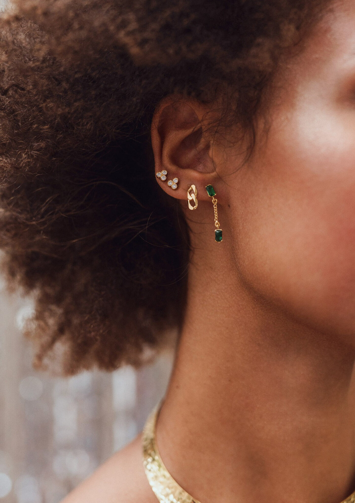
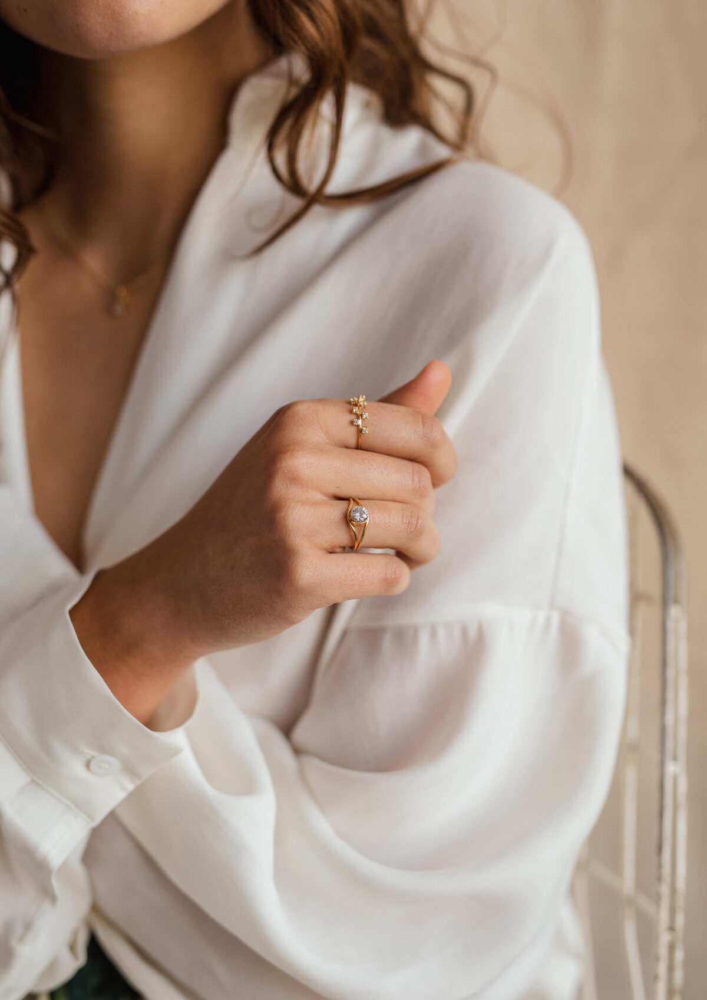
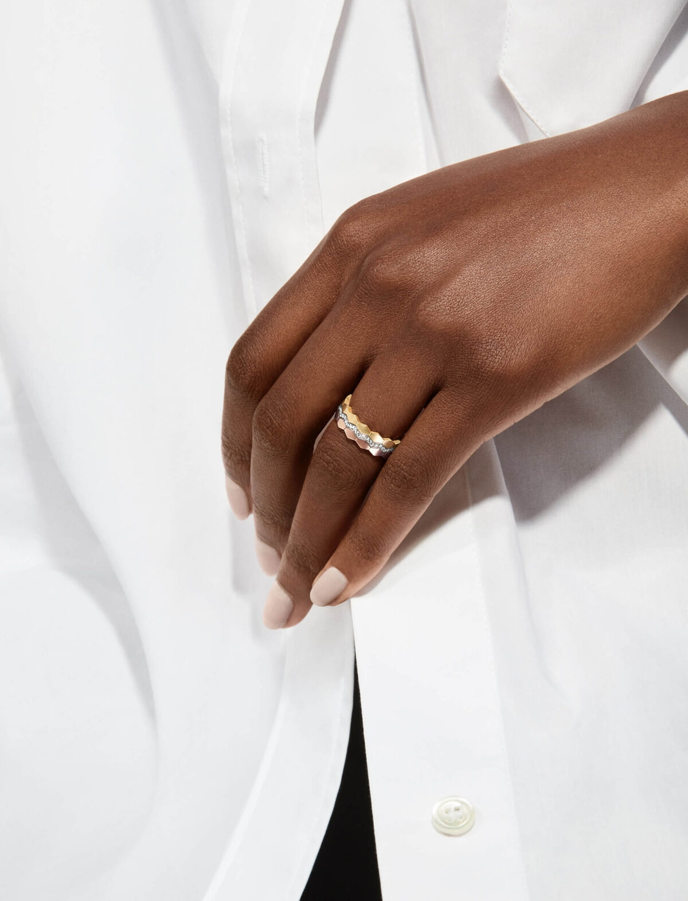

Start a project
Start a project
Start a project
Start a project
A thirty-year jewellery house steps into a new chapter — sterling silver, a younger audience, and an identity that holds the family's gemstone heritage with quiet, modern restraint.

Auric had spent three decades earning its reputation in gems and gold. The new sterling silver line needed an identity that felt like a fresh chapter without abandoning the family name — something modern, classic, timeless.
We built the system around a single image — a delicate red diamond ring nested into the wordmark — and balanced it with an unhurried editorial typeface and a palette borrowed from sand, eggshell, and rose-gold dust. The result is a brand that looks at home in a glass display case and a phone screen alike.

Editorial · Stacked stud campaign · Auric Jewels SS22
A two-tone primary palette — warm cream and a powdered silver-pink — gives the brand its quiet, unmistakable surface. Used at scale across boxes, business cards and the website backdrop.


"Our logo is the key building block of our identity — the symbol and the name share a fixed relationship that should never be changed in any way."
— From the Auric Brand Manual, Issue 01